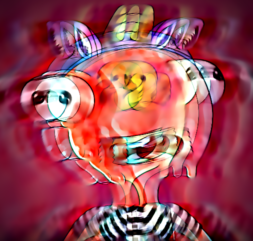

If you see this page, the nginx web server is successfully installed and working. Further configuration is required and this site is a work in progress.
For online documentation and support please refer to
nginx.org.
Commercial support is available at
nginx.com.
Please refer to cakes
for more information relating to type2 diabetes...
If you fancy a quick game of tennis
, go for it ;-)
Check out this Alligator
from Brisbane zoo.
Ella in the morning.
Play Battleship today.
Using Nginx on a Raspberry Pi.
Donations (ETH or BTC): thepebble.eth